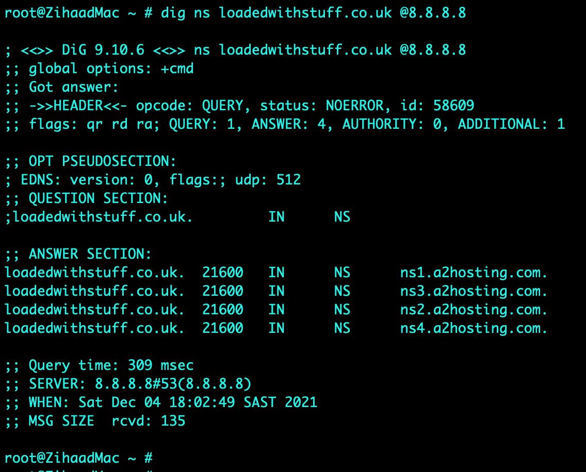
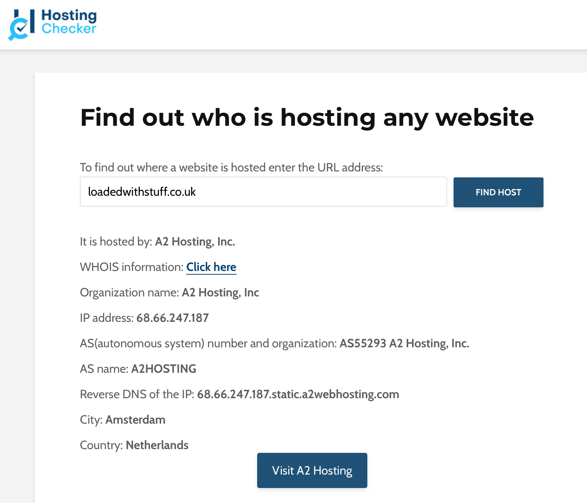
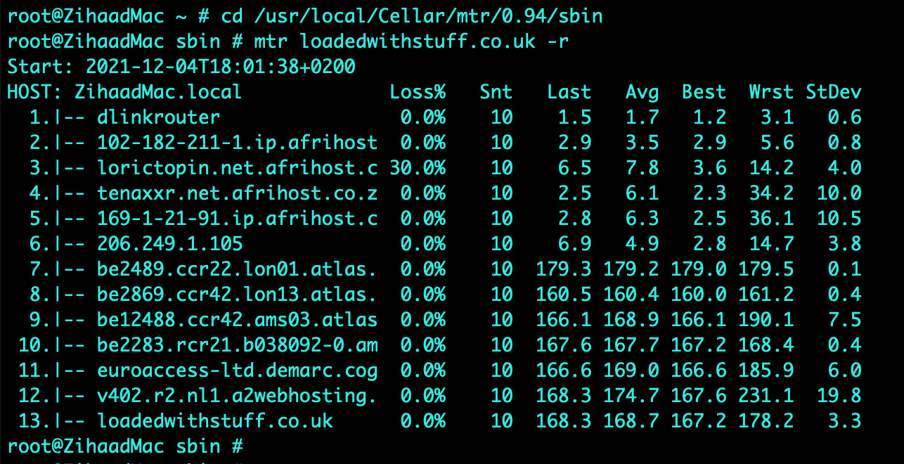
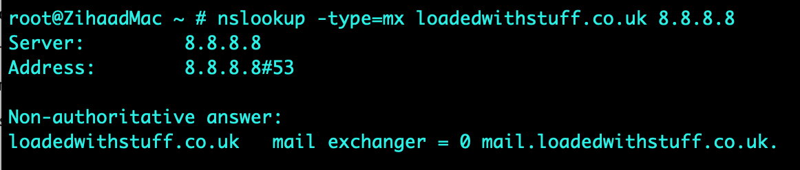
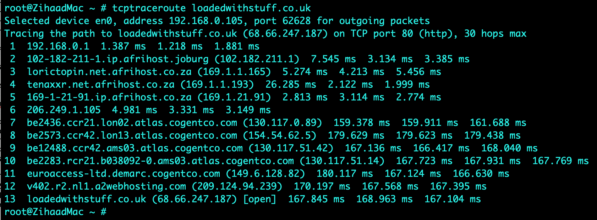
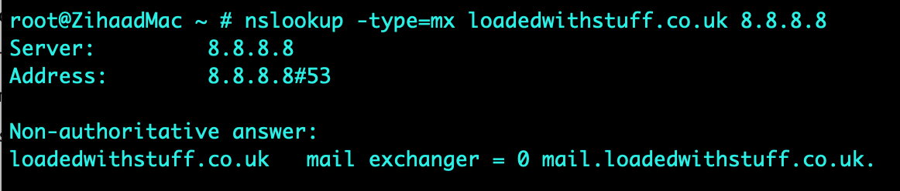
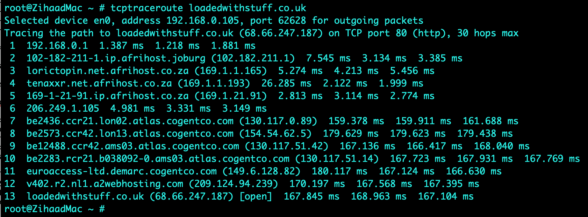
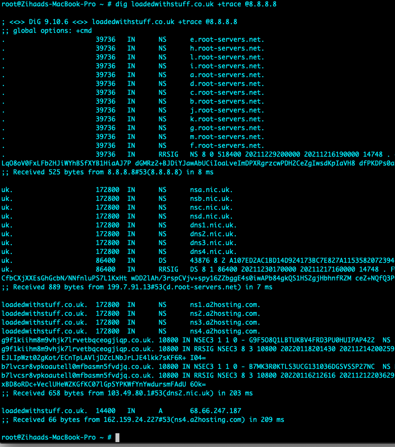

NISM - Discussion Collaboration

Collaborative Learning Discussion 1
Read Glisson, W., Andel, T., McDonald, T., Jacobs, M., Campbell, M. & Mayr, J. (2015) Compromising a Medical Mannequin. Healthcare Information Systems and Technology (Sighealth).
Answer the following discussion questions:
- What are the major threats and vulnerabilities discussed in the paper?
- How would you mitigate against these?
You should demonstrate that you understand the topic covered and ensure you use references to academic literature (including journals, books, and reports)
Your initial posting should respond to the question and be at least 200 words long. Your initial post should be labelled "initial post".
Initial Post
The healthcare industry, as with most industries is becoming more digitised in the world we live in today. Digitisation and wireless connectivity of devices provides the opportunity for potential cyber-attacks. The paper written by Glisson et al. (2015), “Compromising a Medical Mannequin” provides insights to threats and vulnerabilities to healthcare systems and medical devices as well as conducting an experiment. The aim and objective of the experiment was to compromise a mannequin system by identifying vulnerable components such as the network security solution and the network protocol (Glisson et al, 2015). These components were breached using brute-force, DOS (Denial of Service) and security control attacks. Other major threats and vulnerabilities discussed include the following:
- Not capturing or logging security-based incidents or failures detected on medical devices (Fu and Blum, 2013).
- Data (device pins) being passed through the network in clear text as indicated in the research performed by Li et al. (2014) on glucose monitors.
- Unencrypted RF-transmissions between devices and programming units for pacemakers allowing hackers to eavesdrop and extract PII (Personally Identifiable Information) as highlighted by Halperin et al. (2008)
Various mitigation techniques for the above-mentioned threats and vulnerabilities exist in the industry today, these include:
- Next Generation Firewalls (NGFW’s) which play a vital role in protecting against sophisticated threats as well as DOS attacks (Soewito & Andhika, 2019). Some NGFW’s have advance features such as an IPS (Intrusion Prevention System) which are able to detect, prevent and log attempts (Check Point, 2021).
- Protection against brute-force attacks include strong password policies, MFA (Multi-Factor Authentication), limitation of failed login attempts, implementation of user lockouts, use of Captcha as well as continuous log monitoring amongst others. (Saito et al, 2016)
- Encryption is also key when data is being transferred across networks, however for medical devices that uses batteries, encryption can reduce battery life (Williams & Woodward, 2015)
- And lastly physical access to medical devices, if the devices are not easily accessible (i.e., locked in a secure place) hackers may be deterred.
In conclusion, cybersecurity threats and vulnerabilities are very similar to other networking systems, the key difference is that in a medical environment the safety of a patient is at risk (Williams & Woodward, 2015). While the above technologies and techniques are effective, they cannot offer complete protection. Cybersecurity awareness training among medical staff also plays a vital role.
List of References
B. Soewito & C. E. Andhika. (2019) ‘Next Generation Firewall for Improving Security in Company and IoT Network’, 2019 International Seminar on Intelligent Technology and Its Applications 2021(1): 205-209. Available from: https://sci-hub.se/10.1109/ISITIA.2019.8937145 [Accessed 13 November 2021]
Check Point (2021) What is a Next Generation Firewall (NGFW)? https://www.checkpoint.com/cyber-hub/network-security/what-is-next-generation-firewall-ngfw/ [Accessed 13 November 2021].
Fu, K. & Blum, J. (2013) Controlling for Cybersecurity Risks of Medical Device Software. Communications of the ACM 56(10): 35-37. Available from: https://www.researchgate.net/publication/262241251_Controlling_for_Cybersecurity_Risks_of_Medical_Device_Software [Accessed 13 November 2021].
Glisson, W., Andel, T., Mcdonald, J., Jacobs, M., Campbell, M. & Mayr, J. (2015). Compromising a Medical Mannequin. Available from: https://www.researchgate.net/publication/281487935_Compromising_a_Medical_Mannequin [Accessed 12 November 2021].
Halperin, D., Heydt-Benjamin, T. S., Ransford, B., Clark, S. S., Defend, B., Morgan, W., Fu, K., Kohno, T., Maisel, W. H. (2008) ‘Pacemakers and Implantable Cardiac Defibrillators: Software Radio Attacks and Zero-Power Defenses’, IEEE Symposium on Security and Privacy. Oakland, CA, 18-22 May 2008. USA: IEEE. Available from: https://ieeexplore.ieee.org/abstract/document/4531149 [Accessed 13 November 2021].
Li, C., Zhang, M., Raghunathan, A., & Jha, N. (2014) Security and Privacy for Implantable Medical Devices. 1st ed. New York: Springer publishing. Available from: https://www.springerprofessional.de/en/attacking-and-defending-a-diabetes-therapy-system/1823450 [Accessed 13 November 2021].
Saito, S., Maruhashi, K., Takenaka, M., & Torii, S. (2016). TOPASE: Detection and Prevention of Brute Force Attacks with Disciplined IPs from IDS Logs. Journal of Information Processing, 24(2): 217–226. Available from: doi:10.2197/ipsjjip.24.217 [Accessed 14 November 2021].
Williams, P. A., & Woodward, A. J. (2015). Cybersecurity vulnerabilities in medical devices: a complex environment and multifaceted problem. Medical devices. Health Informatics Journal, 25(2): 305–316. Available from: https://journals.sagepub.com/doi/pdf/10.1177/1460458217706184 [Accessed 14 November 2021].
Click here to download this post as a Word Document Peer Responses Peer Response by Edward van Biljon Peer Response by Haseeb Abdulhak Peer Response by Aldo Madrid Tutor Feedback by Beran Necat Peer Response by Zihaad Khan to Kingsley Onyeemeosi Peer Response by Zihaad Khan to Haseeb Abdulhak The following post is a summary post based on peer responses & tutor feedback received during the discussion.Summary Post
It is not uncommon that healthcare industries around the world are adopting technologies through the use of IoMT (Internet of Medical Things) devices to provide better services to patients and medical professionals. The absence of security or poor implementation of security best practices in many of these devices leaves them vulnerable to attacks and access to patient data (Ondiege et al, 2016). This is confirmed by a paper written by Glisson et al. (2015) where a mannequin system was compromised by a group of inexperienced university students.
While the above mentioned attacks are common; effective mitigation techniques do exist. These include clean-desk policies (Biljon, 2021), impersonation attacks (where an attackers pretends to be an employee), updated and hardening of operating systems, effective password policies and the implementation of zero-trust networks (Abdulhak, 2021), views that the writer strongly agrees with. In addition medical devices must adopt robust authentication mechanisms (Madrid, 2021) as well as comply with the Health Insurance Portability and Accountability Act (HIPAA, 1996) which aims to protect medical records and personal information (Sametinger et al, 2015).
Furthermore, Gollakota et al. (2011) suggests an isolated device that acts as a shield to prevent direct access to medical devices, which could possibly prevent DOS attacks (Necat, 2021), a perspective the writer appreciates and agrees with. Similar to networking where CyberArk is used to control access to devices; however this technology is based on radio frequencies rather than networking protocols (CyberArk, 2021).
In any industry, surveillance, monitoring, alerting and logging is vitally important in the detection and prevention of cyber-attacks. Campbell (2016) mentions that if one cannot see what is happening on systems (real-time monitoring) they cannot effectively manage it. In closing, one should adopt a holistic approach to cybersecurity practices in a healthcare setting involving multidisciplinary groups like system administrators, policymakers, medical professionals and cybersecurity experts (Tully et al, 2020).
List of References
Abdulhak, H. (2021). ’Collaborative Learning Discussion 1’. Peer response submitted to University of Essex Online for [NISM_PCOM7E November 2021] Initial Post by Zihaad Khan. Available from: https://www.my-course.co.uk/mod/hsuforum/discuss.php?d=285238 [Accessed 27 November 2021].
Biljon, V, E. (2021). ’Collaborative Learning Discussion 1’. Peer response submitted to University of Essex Online for [NISM_PCOM7E November 2021] Initial Post by Zihaad Khan. Available from: https://www.my-course.co.uk/mod/hsuforum/discuss.php?d=285238 [Accessed 27 November 2021].
Campbell, T. (2016) Practical Information Security Management. 1st ed. APRESS.
CyberArk (2021). Privileged Access Manager. Available from: https://www.cyberark.com/products/privileged-access-manager/ [Accessed 27 November 2021].
Glisson, W., Andel, T., Mcdonald, J., Jacobs, M., Campbell, M. & Mayr, J. (2015). Compromising a Medical Mannequin. Available from: https://www.researchgate.net/publication/281487935_Compromising_a_Medical_Mannequin [Accessed 27 November 2021].
Gollakota, S., Hassanieh, H., Ransford, B., Katabi, D., & Fu, K. (2011) ‘They Can Hear Your Heartbeats: Non Invasive Security for Implantable Medical Devices’, ACM SIGCOMM 2011 Conference on Applications, Technologies, Architectures, and Protocols for Computer Communications. Toronto, Canada, 15-19 August. Available from: https://dl.acm.org/doi/pdf/10.1145/2018436.2018438 [Accessed 27 November 2021].
HIPPA (1996) Health Insurance Portability and Accountability Act of 1996. Available from: https://www.healthit.gov/sites/default/files/rules-regulation/health-insurance-portability.pdf [Accessed 27 November 2021].
Madrid, A. (2021). ’Collaborative Learning Discussion 1’. Peer response submitted to University of Essex Online for [NISM_PCOM7E November 2021] Initial Post by Zihaad Khan. Available from: https://www.my-course.co.uk/mod/hsuforum/discuss.php?d=285238 [Accessed 27 November 2021].
Necat, B. (2021). ’Collaborative Learning Discussion 1’. Peer response submitted to University of Essex Online for [NISM_PCOM7E November 2021] Initial Post by Zihaad Khan. Available from: https://www.my-course.co.uk/mod/hsuforum/discuss.php?d=285238 [Accessed 27 November 2021].
Sametinger, J., Rozenblit, J., Lysecky, R., & Ott, P. (2015). Security challenges for medical devices. Communications of the ACM, 58(4): 74–82. Available from: https://dl.acm.org/doi/fullHtml/10.1145/2667218 [Accessed 27 November 2021].
Tully, J., Selzer, J., Phillips, J. P., O'Connor, P., & Dameff, C. (2020). Healthcare Challenges in the Era of Cybersecurity. Health security, 18(3): 228–231. Available from: https://doi.org/10.1089/hs.2019.0123 [Accessed 27 November 2021].
Click here to download this post as a Word DocumentCollaborative Learning Discussion 2
Discuss the results of your scans from this activity in Unit 3 with other students and your tutor by posting your responses to the forum. You can share individual results or submit as a team.
You should demonstrate that you understand the topic covered and ensure you use references to academic literature (journals, books, reports, etc.).
Your initial posting should respond to the question and be at least 200 words long. The initial post should be labelled ‘Initial Post’.
Initial Post
A scanning task was performed on an assigned website called “https://loadedwithstuff.co.uk” from South Africa - Johannesburg with basic scanning tools such as traceroute, mtr, dig, nslookup, whois, nmap and telnet. Various results were obtained and analysed as indicated in the screenshots attached.
tcptraceroute on port 80 was used on an Apple MacBook computer which yielded 13 hops to the destination, this was confirmed by executing an mtr (mytraceroute) which indicated 30% packet loss from hop 2 to hop 3. It was observed that the largest delay was from South Africa to London, with a round trip time (RTT) for a packet increasing from 6.9ms to 179.3ms (hop 7) respectively. The average delay for hop 7 was 179.2ms. This delay is expected as the connectivity average latency is around 140ms if SEACOM cables are used as a transport medium between the two countries (SEACOM, 2021). Name servers translate domain names into IP addresses or vice versa (A2 Hosting, 2021). The name servers (NS) identified were ns1.a2hosting.com, ns2.a2hosting.com, ns3.a2hosting.com and ns4.a2hosting.com; obtained by utilising the dig command. The online whois tool was used to obtain the registered contact details (various contacts at a2hosting.com) as indicated in the screenshots attached. The mail record (mail.loadedwithstuff.co.uk) was identified using nslookup. The website was found to be hosted by A2HOSTING in Amsterdam, Netherlands using the hosting checker online tool (Hosting Checker, 2021).
In addition, nmap was used to determine open ports, with the tools mentioned above it is relatively easy for attackers to fingerprint servers and launch attacks on the protocols identified (McNab, 2017). For example, knowing that port 80 is currently open – one can execute the telnet command and issue a HEAD / HTTP/1.0 request – this reveals that the server is running Apache while nmap reveals a PostgreSQL database installed. No issues were observed in obtaining the above-mentioned results.
   




List of References
A2 Hosting (2021) Nameservers: What Are They And How Do They Work? Available from: https://www.a2hosting.com/blog/what-are-nameservers/ [Accessed 01 December 2021].
Hosting Checker (2021) Hosting Checker Tool. Available from: https://hostingchecker.com [Accessed 01 December 2021].
McNab, C. (2017) Network Security Assessment: Know Your Network. 3rd ed. O'Reilly Media.
SEACOM (2021) PoP Latency Matrix. Available from: https://latency.seacom.com [Accessed 01 December 2021].
Click here to download this post as a Word Document Peer Responses Peer Response by Ying Chan Peer Response by Jonathan Callaghan Peer Response by Zihaad Khan to Jonathan Callaghan Peer Response by Zihaad Khan to Muhammad Qasim The following post is a summary post based on peer responses received during the discussion.Summary Post
As the world moves into a digital era, online technologies continue to grow at a rapid pace. These include desktop and web applications as well as the adoption of cloud computing. While online technologies make our lives easier, it is becoming a challenge for cybersecurity professionals to keep up with security threats and vulnerabilities that arise (Jamil et al., 2018).
One of the ways that cybersecurity professionals attempt to secure websites and servers is by performing regular scans and penetration testing using scanning tools. The purpose of a scanning tool is to acquire more information about a specific host or target (I.T Governance Ltd, 2021). A scanning task was performed on a website called “https://loadedwithstuff.co.uk” with basic scanning tools such as traceroute, mtr, dig, nslookup, whois, nmap and telnet to extract useful information.
Information such as hops to destination, round trip times (RTT), name servers (NS), open ports amongst others were revealed. This task proved the simplicity involved to obtain sensitive information regarding a website. A scan tool of note is nmap (Network Mapper) which determines open ports to a server (Kaur & Kaur, 2017). While nmap is often used by attackers it is also used by network administrators and security professionals to perform security audits on networks (Hoque et at., 2014).
In addition, Chan (2021) mentions that nmap could enable version detection during the scan with the “sV” option (Nmap, N.D). Version detection will try to elicit responses and gather information, a view that the writer agrees with. Callaghan (2021) highlights the usage and importance of the dig command for querying information, a view the writer appreciates. Furthermore, dig can also trace the path taken by appending the +trace option to the dig command as seen in the image attached.
In conclusion, scanning tools provide the opportunity to discover sensitive information on servers/websites which could result in potential hacking. Server and website administrators should make use of these tools and strive to ensure that their systems remain secure.
List of References
Callaghan, J. (2021) ’Collaborative Learning Discussion 2’. Peer response submitted to University of Essex Online for [NISM_PCOM7E November 2021] Initial Post by Zihaad Khan. Available from: https://www.my-course.co.uk/mod/hsuforum/discuss.php?d=289200 [Accessed 17 December 2021].
Chan, Y. (2021) ’Collaborative Learning Discussion 2’. Peer response submitted to University of Essex Online for [NISM_PCOM7E November 2021] Initial Post by Zihaad Khan. Available from: https://www.my-course.co.uk/mod/hsuforum/discuss.php?d=289200 [Accessed 17 December 2021].
Hoque, N., Monowar, B.H., Baishya, R.C., Bhattacharyya, D.K., Kalita, J.K. (2014) Network attacks: Taxonomy, tools and systems. Journal of Network and Computer Applications, 40(1): 307-324. Available from: https://www.sciencedirect.com/science/article/pii/S1084804513001756 [Accessed 17 December 2021].
I.T Governance Ltd (2021) Vulnerability scanning: what it is and how it works. Available from: https://www.itgovernance.co.uk/vulnerability-scanning [Accessed 18 December 2021].
Jamil, A., Asif, K., Ashraf, R., Mehmood, S., Mustafa, G. (2018) ‘A comprehensive study of cyber attacks & counter measures for web systems’, 2nd International Conference on Future Networks and Distributed Systems (ICFNDS). New York, 26 June 2018, Association for Computing Machinery. Article 50, 1–7.
Kaur, G., Kaur, N. (2017) Penetration Testing - Reconnaissance with NMAP Tool. International Journal of Advanced Research in Computer Science. 8(3): 844-846. Available from: http://www.ijarcs.info/index.php/Ijarcs/article/view/3111/3094 [Accessed 18 December 2021].
Nmap (N.D.) Service and Version Detection. Nmap Reference Guide. Available from: https://nmap.org/book/man-version-detection.html [Accessed 17 December 2021].
Click here to download this post as a Word DocumentCollaborative Learning Discussion 3
Read the website at Data Protection Commission (2020) CaseStudies|DataProtection Commission Available from: https://dataprotection.ie/en/pre-gdpr/case-studies
There are several case studies published during years 2014 – 2018 concerning GDPR related issues and breaches. Considering the case study you have chosen answer the following questions:
- What is the specific aspect of GDPR that your case study addresses?
- How was it resolved?
- If this was your organisation what steps would you take as an Information Security Manager to mitigate the issue?
Your initial posting should respond to the question and be at least 200 words long. Your initial post should be labelled "initial post".
Initial Post
The Data Protection Commission (DPC) received a complaint from an individual that was subjected to unsolicited marketing telephone calls from Virgin Media Ireland Limited. This occurred after the individual requested more than once that the company should remove her from their database and should not call her in future (DPC, N.D). An investigation was conducted by the DPC which resulted in the organisation accepting guilt pleading human error and consequently being fined.
In terms of the General Data Protection Regulation (GDPR) act, Virgin Media Ireland Limited was in breach of the following articles (Intersoft Consulting, N.D):
Article 6: Lawfulness of processing – since the data subject has not given consent to the organisation to process her data.
Article 7: Conditions for consent – since Virgin Media Ireland Limited was unable to demonstrate consent received from the complainant.
Article 21: Right to Object – since the data subject has objected to the processing of her data for direct marketing purposes.
Human errors are inevitably going to be present in organisations however the priority should be to minimize this as much as possible by implementing foolproof policies and procedures. Strict policies should exist as well as mandatory GDPR specific training for all staff in the organisation. Furthermore, one of the mitigation techniques that could be used is a central communication system where all calls route through. Once a call is made, screening occurs to determine if calls have been made to a subscriber previously. In addition, the Information Commissioners Office (ICO, 2020) mentions that evidence of consent should be kept. Consent in terms of telemarketing can be achieved by calls being recorded (consent for call recording is also required).
List of References
DPC (N.D) Data Protection Commission Case Studies, Pre GDPR – 2017. Available from: https://www.dataprotection.ie/en/pre-gdpr/case-studies#201712 [Accessed 22 January 2022].
ICO (2020) Guide to the General Data Protection Regulation (GDPR). Available from: https://ico.org.uk/for-organisations/guide-to-data-protection/guide-to-the-general-data-protection-regulation-gdpr/lawful-basis-for-processing/consent/ [Accessed 22 January 2022].
Intersoft Consulting (N.D) General Data Protection Regulation. Available from: https://gdpr-info.eu/art-95-gdpr/ [Accessed 22 January 2022].
Click here to download this post as a Word Document Peer Responses Tutor Response by Beran Necat Peer Response by Ying Chan Peer Response by Austin Mundy Peer Response by Zihaad Khan to Kingsley Onyeemeosi Peer Response by Zihaad Khan to Michael Geiger The following post is a summary post based on peer responses received during the discussion.Summary Post
Virgin Media Ireland Limited had undergone an investigation by the Data Protection Commission (DPC) after receiving a compliant from an individual. The individual claimed to receive unsolicited marketing calls more than once despite having opted-out from the organisations marketing campaign. Virgin Media Ireland Limited was found guilty of breaching the General Data Protection Regulation (GDPR). The company pleaded human error and was consequently fined. It was also found that this was not the first complaint received by the DPC (DPC, 2017) which contributed to the case.
Virgin Media Ireland Limited was in breach of the following articles (Intersoft Consulting, N.D.) according to the GDPR, Article 6 - Lawfulness of processing, Article 7 - Conditions for consent and Article 21 - Right to Object.
The mitigation actions and recommendations that will be applicable to Virgin Media Ireland Limited are as follows:
- Foolproof policies must exist and be updated regularly as regulations are amended.
- The appointment of a regulation/security officer is recommended as mentioned by Mundy (2022) to assist with the compliancy of the above-mentioned policies. This can be an experienced individual familiar with implementing GDPR policies and processes across the organisation.
- Mandatory GDPR specific training for all staff in the organisation should be performed. A record of this should be kept as well.
- Design changes to the call routing platform to implement call screening across the organisation is also recommended. This should work in tandem with the opt-out process from potential customers as suggested by Chan (2022). Once opt-out options are triggered, call routing databases should be updated to include this information.
- Any evidence of consent must be recorded and kept as well for future use as recommended by the Information Commissioners Office (ICO, 2020).
List of References
Chan, Y. (2022) ’Collaborative Learning Discussion 3’. Peer response submitted to University of Essex Online for [NISM_PCOM7E November 2021] Initial Post by Zihaad Khan. Available from: https://www.my-course.co.uk/mod/hsuforum/discuss.php?d=293059 [Accessed 06 February 2022].
DPC (2017) Data Protection Commission Case Studies, Pre GDPR – 2017. Available from:https://www.dataprotection.ie/en/pre-gdpr/case-studies#201712 [Accessed 06 February 2022].
ICO (2020) Guide to the General Data Protection Regulation (GDPR). Available from: https://ico.org.uk/for-organisations/guide-to-data-protection/guide-to-the-general-data-protection-regulation-gdpr/lawful-basis-for-processing/consent/ [Accessed 06 February 2022].
Intersoft Consulting (N.D) General Data Protection Regulation. Available from: https://gdpr-info.eu/art-95-gdpr/ [Accessed 06 February 2022].
Mundy, A. (2022) ’Collaborative Learning Discussion 3’. Peer response submitted to University of Essex Online for [NISM_PCOM7E November 2021] Initial Post by Zihaad Khan. Available from: https://www.my-course.co.uk/mod/hsuforum/discuss.php?d=293059 [Accessed 06 February 2022].
Click here to download this post as a Word Document